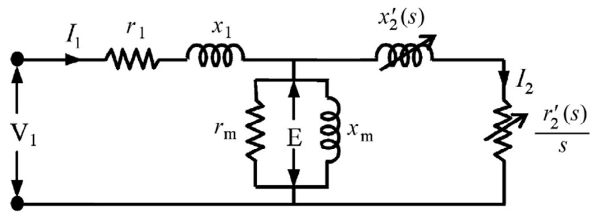

Understanding efficiency improvements in induction motors
Two induction motors can meet the same efficiency requirement through different design choices. One may reduce conductor losses more; another may place greater emphasis on magnetic or mechanical losses. This study uses manufacturers’ published performance data to examine those choices when detailed motor designs are proprietary.
I coauthored the paper with Edson Bortoni, José Vitor Bernardes Júnior, Paulo V. V. da Silva, and Paulo A. V. Vieira at the Center of Excellence in Energy Efficiency (EXCEN), Federal University of Itajubá. This induction-motor study complements my EXCEN work on electrical-machine modeling and is separate from my synchronous-machine thesis.

Figure 4 of Bortoni et al. (2019) illustrates approximate loss shares across power ratings for four-pole, 50 Hz motors at rated load. Stator and rotor current losses account for much of the total.
From catalog data to circuit parameters
The study derives an induction motor’s equivalent-circuit parameters from catalog values for efficiency, current, power factor, rated speed, and starting and breakdown torque. An algebraic method uses the torque information to separate total short-circuit reactance into stator and rotor components. Rotor resistance and reactance vary with slip, reflecting different behavior during starting and normal operation.
The method is applied to catalog data for dozens of motors from WEG, Siemens, ABB, and Leroy-Somer. The selection covers directly supplied, general-purpose motors rated from 1 to 100 kW across multiple efficiency classes. Comparing stator, rotor, and magnetizing-branch resistance helps infer how manufacturers reduce losses.


Figure 3 of Bortoni et al. (2019) shows the stator, magnetizing branch, and rotor in the equivalent circuit. The variable rotor elements depend on slip, connecting starting behavior with operation near rated speed.
What the comparisons show
The catalogs suggest that manufacturers follow different paths to higher efficiency. Lower stator and rotor resistances reduce current-related losses, while a higher equivalent magnetizing resistance represents lower losses in the model’s parallel branch. The relative importance of these changes varies with motor rating and efficiency class.
The algebraic formulation can be implemented in software or a spreadsheet without an optimization solver. It provides a consistent way to compare efficiency strategies using catalog performance and estimated circuit parameters.
Interpreting the estimates
The comparisons infer design strategies from the catalogs and motor types examined in the 2019 study. They rely on an approximate circuit model, which groups rotational losses into the magnetizing branch, without teardown or independent certification testing. The analysis excludes variable-reluctance and permanent-magnet synchronous motors.